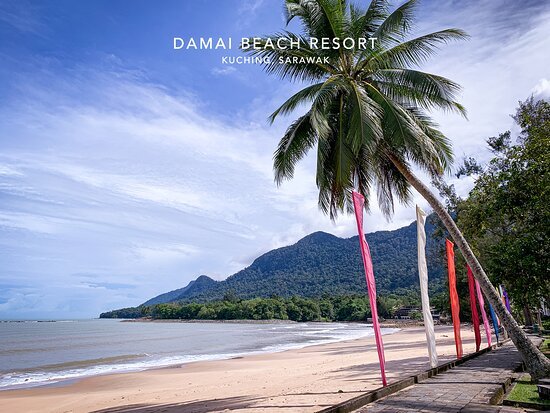
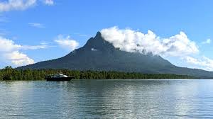
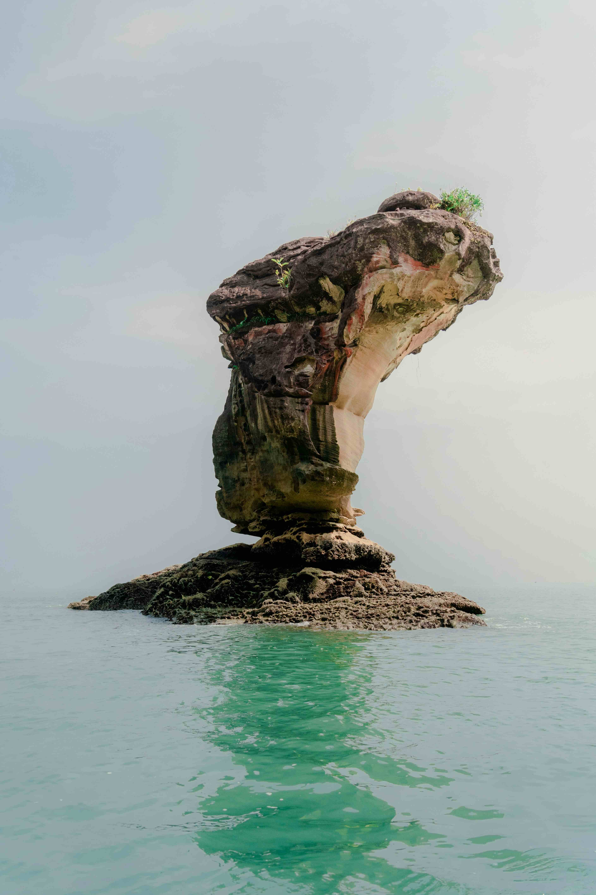

Experience nature, culture, food, and adventure in the Land of the Hornbills.
Welcome to Explore Sarawak
Sarawak is one of the most beautiful states in Malaysia, famous for its rich culture, rainforests, mountains, wildlife, and traditional heritage. This website helps visitors discover popular tourist attractions, delicious local food, and exciting activities in Sarawak.

At Damai Beach, take in the serene beach environment and stunning sunsets.

Enjoy in the breathtaking natural beauty and hiking experiences close to Kuching City.

Discover the oldest national park in Sarawak, which features stunning beaches, woodlands, and unusual fauna.
Website URL: https://dillonchaizhiyao88-rgb.github.io/DBI1211-105811278_105808843_Group/